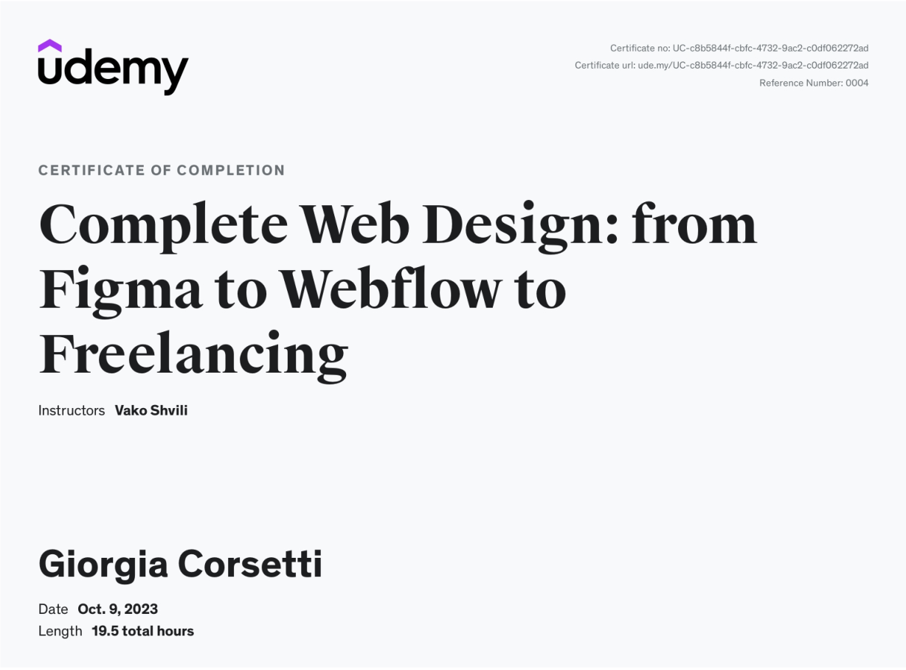

I'm Giorgia, a 26-year-old Italian who has called Malta home since 2016. My professional journey began in iGaming, where I honed my expertise in customer service and digital marketing, mastering skills such as SEO, website optimization and strategic planning.
Despite my success in the iGaming industry, I found myself yearning for a more fulfilling career path. This realization led me to resign and embark on a transformative journey of self-discovery. Over the past 8 months, I've dived deep in the world of Graphic Design, Web Design, UX/UI Design and Web Development completing various courses on platforms like Udemy and Coursera.
Beyond my professional pursuits, I absolutely love painting, drawing, gardening and delving into psychology books during my free time. I also like to be involved in voluntary initiatives related to mental health support, environmental restoration and preservation. Nature holds a special place in my heart and I often find peace in walks, considering it a therapeutic escape from the distractions of society.
Now equipped with a wealth of knowledge from these courses, I am eager to showcase my skills and contribute remotely. Let's connect and explore the possibilities of collaboration!
Graduated at Liceo Linguistico Ninni Cassarà, Palermo, italy
on following years: November 2011 - July 2016
Received a High school diploma in July 2016 (Grade: 95 out of 100) on following languages:
Gardener Assistant | Derek Gardens | August 2023 - September 2023
Participated in the INTERCEPT project funded by EU and JobsPlus, helping people not in Employment nor in Education transitioning to the Green sector. Executed fall and spring cleanups, used tools for pruning, trimming, and grounds maintenance. Identified and removed invasive plants. Continued learning about gardening techniques, monitored weather and soil conditions, and ensured plant health. Maintained cleanliness, safety, and tools. Developed and maintained efficient irrigation systems for cohesive landscapes.
Junior SEO Specialist | William Hill International | August 2022 - June 2023
Led comprehensive SEO efforts, optimizing websites for improved search engine visibility. Implemented strategic changes, researched keywords for the https://williamhill.it/, https://sports.williamhill.it/betting/it-it, https://casino.williamhill.it/, https://vegas.williamhill.it/slot https://williamhillfree.net/, https://williamhill.com/at/, and https://mrgreen.com/ and elevated product rankings. Monitored daily metrics, collaborated cross-functionally, and updated content for maximum optimization. Executed effective link-building strategies and analyzed competitor techniques. Proficient in Ahrefs, SEMrush, Google Analytics, and more. Expertise in Google Search Console, Screaming Frog, ContentStack, and WordPress.
Italy Casino Executive | William Hill International | November 2021 - August 2022
Defined competitive goals, growth roadmaps, and strategic business plans. Executed game repositioning aligned with performance metrics and brand strategies for . Tested and monitored new content or functionalities. Uploaded game and website content, analyzed performance metrics, and suggested promotional strategies. Coordinated ad hoc Casino product projects, efficiently communicated with marketing professionals and conducted regular team meetings to address issues and updates.
European Customer Account Team Leader | Hillside gaming bet365 ltd | May 2021 - November 2021
Developed Italian department advisors, creating development plans, organizing coaching sessions for high-quality customer service. Efficiently communicated with all company departments, provided feedback, and created reports. Mentored employees, conducted training for productivity and friendly service. Built strong customer relationships, resolved issues promptly, and held weekly team meetings for updates. Monitored KPIs and collaborated on improvement solutions.
European Customer Account Advisor | hillside gaming bet365 ltd | January 2020 - May 2021
Built customer relationships by educating on product value. Handled inbound calls, Live Chats and Emails for Sports and Gaming Products. Managed databases, responded proactively to change, swiftly resolved inquiries, provided excellent care, and promoted a superior experience. Exhibited professionalism, addressed concerns with empathy, educated on policies and delivered exceptional service.
Trading Support Agent | Stanleybet Group | December 2018 - January 2020
Supported daily trading office operations, monitored and settled markets, troubleshooted system errors, responded to emails, prepared reports, and created Sporting Calendar. Handled trading analysis, used a ticketing system for customer requests, prioritized urgent needs, checked market deadlines and managed odds/events insertions.
English Game Presenter | NetEnt | May 2018 - December 2018
Presented online casino games, including Roulette and Blackjack, exclusively in English. Dealt cards, verified bets, and maintained a fast-paced game. Created an enjoyable atmosphere through positive conversations and assisted customers with bets.
Live Casino Dealer | Medialive Casino | December 2016 - June 2018
Dealt online casino games like Roulette, Blackjack, and Baccarat in English and Italian. Ensured fair play, explained rules, engaged players positively, and maintained a smooth game pace. Followed company procedures, assisted players with bets, and ensured a clean, secure gaming environment. Monitored player behavior, reported outcomes for accurate records, and provided excellent customer service by answering questions and resolving disputes.
Google UX Design Certificate | Coursera (Online Platform) | November 2023 - December 2023
Completed a rigourous training designed for entry-level job readiness. 15 modules included topics like: UX research fundamentals, inclusive design, low-fidelity and high-fidelity prototypes, and tools like Figma and Adobe XD. Completed hands-on projects and developed a portfolio which you can find at www.giorgiacorsetti.com including 3 projects to receive the certificate.
Complete Web Design: from Figma to Webflow to Freelancing | Udemy | Oct 2023
Key Learnings
Graphic Design Masterclass - Learn GREAT Design | Udemy | June 2023
Key Learnings
Create beautiful Imagery with Midjourney AI | Udemy | June 2023
Key Learnings